Gauntlet progress
Platform core, judged piece by piece against the owner's bar and Odoo Community. Rebuilt from gauntlet/verdicts/ by gauntlet/tools/record.mjs. Full evidence in ledger.md; owner items in needs-human.md.
Foundation and hard gates
Wave 0 · 7 rounds judgedOurs beats Odoo only when the person already uses a passkey on this device: 1 confirmation against Odoo's 2 steps. Every first sign-in uses a password, and so does every staff member on a shared counter or warehouse PC. On that path the result is a tie or a loss. (1) Plain address '/': typing a whole e-mail does not move on to the password, so the path is e-mail, Enter, password, Enter: 4 steps and 57 keys for admin@alnoor.example. Odoo's e-mail, Tab, password, Enter is the same 4 steps and 57 keys. Ours wins only on machine seconds. This is round 7's gap, still open. (2) A shared device where anyone once used a passkey (erp.passkeyOffer=1): as the screen opens, it starts a passkey request for up to 300 s, and while that runs the 'Sign in' button is disabled. The page cannot abort the request, so a typed e-mail, Enter, password, Enter does nothing. The next person must first cancel the system prompt: 5 steps against Odoo's 4. For a UAE trading company with shared PCs at the counter and in the warehouse, this is the common case. The fix should let the password path win without a passkey, and must never let the passkey offer block it. Options: abort the arrival request as soon as the person types in the e-mail field (AbortController) and keep Sign in enabled; offer the passkey as a conditional/autofill request (mediation: 'conditional') rather than a modal; move on to the password once the e-mail's domain matches a known workspace on the plain address.
- G3 clean clone: ./erp verify (build, migrate, seed, every test) PASS — Fresh clone of bdca699 at /home/shan/critic/p00-foundation-r8. Command: ERP_PROJECT=c-p00-foundation-r8 ERP_HTTP_PORT=20050 ERP_DB_PORT=20051 ERP_VERIFY_HTTP_PORT=20060 ERP_VERIFY_DB_PORT=20061 verify-slot.sh ./erp verify. Run 1 took its slot at 12:57:24Z with four critics working at once (load up to 85). Every test passed (dotnet 541, web unit 373, e2e 85, compare 320), but the ratchet failed: 'verify.cpuSeconds: the verify stages used 11671 processor seconds, maximum 10500' (dotnet 9753). Log: verify-critic-p00-foundation-r8.log. Run 2 took its slot at 15:18:09Z (load 2 to 40) and ended 'verify passed in 3450 s', processor time 8,694 s (dotnet 7,359), 'Ratchet check passed.', with the same 1,319 tests passing. Log: verify2-critic-p00-foundation-r8.log. The p03 r6 critic set the precedent of judging on the quieter run.
- G3 clean clone: ./erp up (running seeded demo) PASS — ERP_PROJECT=c-p00-foundation-r8 ERP_HTTP_PORT=20050 ERP_DB_PORT=20051 ./erp up served http://localhost:20050 in 86 s wall time. It seeded alnoor with 100,000 users in 45.8 s plus gulfsteel, and printed the demo sign-ins. The port and project overrides from the environment were honoured. Log: erp-up.log. ./erp tenant create made the empty Arabic workspace emptyco in 2.2 s (tenant-create.txt).
- G1 tenant isolation: critic's live attack (API, exports, files, side channels, DB role) PASS — attack/attack.mjs ran as alnoor admin (A) against gulfsteel (B). B first created a canary user, 10 private and shared saved views, a company logo, 5 roles and 5 users. A then sent: 109 operations with B's ids in path, query and body (including nested companies[].branchIds); 465 tenant-switch header, query and cookie requests; Authorization-bearer confusion requests on every read; 100 export requests (csv/xlsx/pdf/json/html, en/ar, company=B); 35 filter-language and keyset-cursor requests. Result: 0 responses carried a B canary or any of 217 B-only ids, and 0 returned 2xx on a B id. A superuser md5 of every tenant table's B rows was identical before and after A's attack (b-before-attack.txt, b-after-attack.txt). Side channels: A's list totals did not move when B wrote. Role versions look random (A1 58198780, B 3590402848..., A2 1018690546). In the DB (db-roles-rls.txt), erp_app is NOSUPERUSER, NOBYPASSRLS and NOINHERIT, owns nothing and is a member of no role. All 17 tenant tables have tenant_id NOT NULL with RLS enabled and forced. As erp_app with tenant A bound, B's users and audit rows return 0, an UPDATE of B's rows touches 0, and with no tenant bound 0 rows are visible. Only the two reviewed erp_auth security-definer functions exist. No jobs exist yet (p12).
- G1 gate catches leaks planted in p00's kernel surface PASS — Plants are in plants/plants.diff, gated by CRITIC_PLANT and run in the toolbox with plants/run-plants.sh. L1, RowVersions.Hide/Reveal returning raw xmin (a cross-tenant transaction counter): caught by G1RowVersionTests ('versions shown to tenant A that are transaction ids of tenant rows: 791, 795, ...', plant-L1.log). L3, a kernel ListBinding 'fast count' that takes unfiltered list totals from pg_stat_user_tables.n_live_tup (all tenants): proven live on a planted stack, where A's user total read 3010 against a true 2005 and rose by 300 when B added 300 users (plant-L3-runtime.txt). G1NonInterferenceTests missed it (plant-L3.log), because it compares two processes over one database. G1HttpIsolationTests caught it: '656 list answers that are not the asking tenant's own: GET /api/tenancy/companies?take=50 answered total 75, but walking the same query returns 26 rows' (plant-L3G.log; the other 154 gate tests passed).
- G2 permissions: deny by default, and the gate catches planted unchecked actions PASS — P1, kernel PermissionAuthorizationHandler letting a GET through when the user holds any permission on the same module.resource: caught by G2PermissionTests.Granting_exactly_one_permission... ('identity.roles.create: GET /api/identity/roles answered 200 (expected 403)', plant-P1.log). P2, RequirePermission dropping the requirement for '.read' permissions (metadata kept): the host refuses to start ('declares tenancy.companies.read but no authorization policy on it requires that permission'), so every G2 test fails (plant-P2.log). Live check: noaccess@alnoor.example gets 403 on GET /api/identity/users and a shell that says 'No areas are open to you yet'.
- Rule gates (licences, no float money, EN/AR parity, audit coverage) and the ratchet PASS — These run inside ./erp verify, and run 2 passed with 'Ratchet check passed.'. The DB has no real, double or money columns. Audit rows carry actor, kind, field-level old and new values and correlation, for example the passkey insert and user inserts in audit.entries. Against round 7's bb96d22, gauntlet/ratchet.json lost no key and lowered no minimum (19 minimums raised, 36 keys added). The one maximum raised, verify.cpuSeconds from 9,000 to 10,500, is the owner's own change (needs-human #12).
1319 / 1319 passed
0 failed · 0 skipped · 3450s
Clean clone → demo: PASS in 3450s
| Task | Ours | Odoo | Winner |
|---|---|---|---|
| sign-in (sign in to an empty workspace) | 1 · 0 · 0.094s · 2.03s | 2 · 0 · 1.296s · 4.68s | ours |


Round 8 · judged 2026-10-09T16:17:43Z · commit bdca699eda
Odoo reference rig and blind comparison harness
Wave 0 · 7 rounds judgedRound 9 closed the r8 hole only for tasks that name an entered value. Two routes remain. (1) A task with saves: true and no enters accepts any back-end read that changed during the measured part as the saved state. This covers follow-approval, see-and-rerun-job, import-5000, switch-to-arabic, sign-in and api-update-user. Set-up can do the task, and run() can make one cheap unrelated change, such as a preference or a version. A verify() that gates on that change then answers 'not done' before the clock and 'done' after it. The saved-state rule is satisfied by the unrelated read. (2) freshStart closes set-up's browser contexts without waiting for requests already sent. A save that set-up's page started lands on the server after the clock starts, and nothing counted caused it. That breaks the README's claim that calls set-up leaves running land before the clock. session.drain covers only fetch, not the browser. Possible fixes: - For a task that saves, require that the measured part itself sent the change. The tracker should see at least one request that changesProduct (or an op.request that is not GET) during the clock. - Require that the read which changed is the one that holds the task's end state. Tasks could declare what verify() must read (for example a resource path), or every saves task could name an `enters` or an expected value. - Wait for, or refuse, requests still in flight in set-up's browser contexts before closing them. Track them as drain does for fetch. - Also pin X12 (set-up's local storage into a signed-in start) and X16 (clipboard reset) with self-tests. - Add Q1, Q2 and the real-driver plant as self-tests.
- Instrument integrity: the harness catches faults planted in the measuring instrument (this piece's surface) FAIL — Stand-in plants are in plants/zz-critic-r9.test.mjs, log plants/critic-r9-plants.log. Both controls hold: C1, the honest approval, verifies; C2, an honest verify() after set-up approved, is refused as 'already done before the clock'. Two plants are MISSED. - Q1: the task saves but names nothing entered. Set-up approves through the API. run() clicks an unrelated button that bumps a version in the back end. verify() passes only when the version moved and the approval is there. Result: verified, 1 step, 0 keys, 0.058 s, and the comparison against an honest path says 'win'. saved_state.changed is ['GET /api/version']. - Q2: set-up types the value and clicks Save in its own browser, and the product takes 3 s to save. The runner closes the set-up context without waiting for the browser's request; the server finishes the save after the clock starts. run() presses Escape and waits. Result: verified, 1 step, 1 key; gained_entered_value is ['GET /api/state']. On a real driver (plants/plant-Q1-api-update-user.diff, log plants/real-driver-plant-Q1-api-update-user-both.log): api-update-user, a LOSS unplanted, is recorded as ours 1 step / 84 keys / 25.27 s against Odoo 2 / 184 / 54.62 s, 'verdict win'. drivers-lint, tasks and baselines stay green with the plant (32/32). Two more code mutations are missed by the whole 347-test suite (plants/critic-r9-mutations-fullsuite.log): X12, set-up's local storage carried into a signed-in start, and X16, the clipboard not emptied at the start. 14 of my 18 mutations were caught (plants/critic-r9-mutations.log): timer, KLM, Shift, paste, control characters, title, favicon, file times, the rig bar, swallowed refusals, POST-as-read settle, drain, unfair start, failed reference run and the moments check.
- G3 clean clone (one command: build, migrate, seed, all tests; one command: running seeded demo) PASS — Fresh clone at 4d34b6a, ERP_PROJECT=c-p01-odoo-rig-r9, ports 20150/20151/20160/20161, run through verify-slot.sh. The slot was taken at 22:35:03Z after a 2,580 s wait, and './erp verify passed in 4304 s' (verify.log, verify.exit rc=0). Processor time was 10,089 s against the 10,500 s maximum. The wall time was not judged because the machine was busy (load 12.6 at the start). The instrument mutations passed 41 of 41, and the built-ours-driver health check verified 11 of 11. './erp up' with ERP_SEED_USERS_CSV returned rc=0 in 127 s (up-shared-dataset.log).
- G1 tenant isolation (product as built) PASS — Every G1 gate test passed in ./erp verify (dotnet 541/541, plus the self-http, self-company and self-noninterference processes). - HTTP (attack/http-attack.py, attack/http-attack.out): signed in as the alnoor admin with gulfsteel's user, role, company, branch and tenant ids, I sent 1,016 requests over all 112 documented operations. They covered ids in paths, report and export parameters (company=B with csv/xlsx/pdf), search, tenantId, and three tenant-switch headers. Result: 0 leaks and 0 writes on B ids accepted; sanity probes return 404 for B ids. - Database (db-attack.txt): all 17 tables with tenant_id have RLS enabled and forced, and erp_app is neither superuser nor BYPASSRLS. With no tenant context it sees 0 rows everywhere. As tenant A it sees 100,005 users, 0 of them B's. An UPDATE on B's rows touches 0 rows, and an INSERT with B's tenant_id violates the policy.
- G2 permissions (product as built) PASS — Every G2 gate test and the on-screen permission plant self-tests (identity, tenancy, forms, client isolation) passed in ./erp verify. p01 adds no product endpoint.
- Rule gates (licence, float money, EN/AR strings, audit, OpenAPI, ratchet) PASS — All pass in ./erp verify and the ratchet check passed. The string check covered 705 keys in English and Arabic and 70 plural messages, and the accessibility check 1,054 JSX elements. Counts: dotnet 541 (min 541), web unit 373 (373), e2e 85 (85), compare 352 (352), instrument mutations 41. None fell below round 8 (484/356/77/315, 20 mutations).
1351 / 1351 passed
0 failed · 0 skipped · 4304s
Clean clone → demo: PASS in 4304s
| Task | Ours | Odoo | Winner |
|---|---|---|---|
| api-update-user (p15) | 2 · 249 · 0.036s · 72.82s | 2 · 184 · 0.415s · 54.62s | odoo |
| edit-and-save (p06) | 3 · 19 · 0.141s · 9.72s | 4 · 19 · 0.241s · 10.28s | odoo |
| find-user (p03) | 3 · 21 · 0.795s · 10.28s | 6 · 5 · 2.599s · 10.35s | odoo |
| sign-in (p00) | 1 · 0 · 0.1s · 2.03s | 2 · 0 · 1.5s · 4.68s | ours |
| create-restricted-user (named; p03) | 5 · 37 · 0.582s · 20.91s | 10 · 46 · 4.91s · 30.05s | ours |
| switch-to-arabic (named; p04) | 1 · 0 · 0.137s · 2.65s | 6 · 1 · 2.94s · 15.28s | ours |
| reach-screen-keyboard (p04) | 2 · 3 · 0.211s · 3.94s | 3 · 8 · 1.065s · 3.99s | ours |
| create-company-branch (p02) | 6 · 49 · 0.427s · 22.17s | 12 · 72 · 3.119s · 48.53s | ours |
| switch-company (p02) | 1 · 0 · 0.109s · 2.65s | 2 · 0 · 0.692s · 5.3s | ours |
| arabic-report (p06) | 2 · 0 · 0.11s · 5.3s | 6 · 0 · 3.957s · 15.9s | ours |
| print-list-arabic (p06) | 3 · 13 · 0.862s · 11.09s | 5 · 32 · 10.28s · 19.06s | ours |
| find-record, custom-field-filter, import-5000, follow-approval, add-rate, attach-file, configure-sequence, export-filtered-list, keyboard-navigation, see-and-rerun-job, who-changed-field | – | – | not-compared |


Round 9 · judged 2026-10-10T00:06:37Z · commit 4d34b6aaf9
Tenants, companies and branches
Wave 1 · 6 rounds judgedRound 6's gap is closed. Every branch-scope read plant (B1, B3, B3b, B4, C1) and the round-6 tenant-record check (P4) now fail the gates, and the hand attacks found no leak. What remains is a screen-level G2 failure on this piece's own surface. The scope rule says only someone who works in every company may create a company or change a company code (tenancy.companyNeedsEveryCompany). But CompanyForm/CompaniesPage gate New and the Code field on the permission alone (tenancy.companies.create / tenancy.companies.update). They ignore the 'every company' and 'every branch' facts the API already sends for the Workspace screen (everyCompany) and for branches (everyBranch). An administrator limited to some companies or branches is offered both actions, fills a form, and is refused on save. screens.test.tsx models everyCompany only for the Workspace screen, so the gate stays green. This is the company-level twin of round 4's failed branch-level screen gate. It matters for a UAE group because the normal set-up is a group controller who holds every entity and branch or entity managers who hold only their own LLC or FZE. Those managers would meet dead-end New and Code edits on the main master-data screen. Fix: expose an 'every company' flag on the companies list and record (or reuse /tenant's everyCompany). Hide New, the Alt+N key and the command-palette entry, and make Code read-only, unless the user holds every company and every branch of it. Then extend screens.test.tsx with an everyCompany:false case for companies (New absent, field:code absent, Alt+N opens nothing) and plant-test it.
- G1 tenant isolation: suite and hand attacks on the product as built PASS — Every G1 test passed in ./erp verify (verify-critic-p02-tenancy-r7.log). Hand attack (attack/tenant-attack.mjs, tenant-attack.log): signed in as admin@alnoor.example, I sent 31 requests at gulfsteel. They covered GET, PUT and DELETE on B's company, logo and branch, a POST of a branch into B's company, workplace switches to B's company and branch, access grants of B's company, B's user, role and default company, tenant-switch headers and query fields, the company profile and branch directory reports, and the list prints, all with B's ids. All came back 404/400 or showed only A's own data. The two canary 'hits' came from A's own branch SHJ-FAC, which has the same Arabic name 'مصنع الشارقة'. B's company and branch versions did not change. Database as erp_app (db-attack.txt): no BYPASSRLS. Every table with tenant_id has RLS enabled and forced. With no tenant bound, it sees 0 companies and 0 branches. erp.current_tenant_id() honours app.tenant_id only inside the transaction that set it.
- G1 tenant layer: planted tenant leak in this piece's migration SQL (T1) PASS — T1 (plants/apply.py T1, batch2.diff): TenancySql's migration rewrites the companies tenant_isolation policy to USING (tenant_id = erp.current_tenant_id() OR erp.current_tenant_id() IS NULL). G1DatabaseIsolationTests.Tenant_tables_enforce_row_level_security_with_the_standard_policy failed: 'tenancy.companies: tenant_isolation must be PERMISSIVE FOR ALL TO PUBLIC USING and WITH CHECK (tenant_id = erp.current_tenant_id())' (plants/batch2-gates.log).
- G1 company and branch layer: planted branch-scope leaks (B1, B3, B3b, B4, C1) and the round 6 tenant-record check (P4) PASS — Round 6's gap is closed. B3b (branch directory skipping the branch filter), B3 (company profile branches) and B1 (access/{userId} options listing every branch) were all caught by G1BranchScopeAttackTests' new own-parameter reads: '114 leaks of branch Z' (plants/batch1-gates.log). B4 (GET /branches/{id} skipping the filter) was caught by the differential check (batch2-gates.log). C1 (the scope binder forgets the branch-limited companies) gave '318 leaks of branch Z' (C1-gates.log). P4 (PUT /api/tenancy/tenant without the every-company check) was caught by both G1BranchScopeAttackTests and G1CompanyIsolationTests: 'refused only by the last layer' (P4-gates.log). Hand check on the real build (attack/scope-attack.log, scope-writes.log): an Administrator limited to ALN-DXB/AQZ-WH and one limited to ALN-SHJ found no other branch or company markers in 46 reads, reports and list prints included. Their writes to the tenant, other companies or branches, their own access and the workplace were refused (403/400/404).
- G2 permissions: planted permission fault (P1) and screen plant (U1) PASS — P1 swaps PUT /api/tenancy/access/{userId} to the read permission tenancy.access.read. Three G2PermissionTests caught it, among them No_endpoint_that_changes_data_is_guarded_by_a_read_permission: 'PUT /api/tenancy/access/{userId:guid} changes data but declares the read permission tenancy.access.read' (batch2-gates.log). U1 offers the company's branch line to a branch-limited user. screens.test.tsx caught it ('companies: where the user works in only some branches ... expected [button:Add branch, …]', plants/U1-web.log).
- G2 screens hide what the user cannot do (tenancy screens): company-level actions for a user who does not work in every company FAIL — Real fault, not planted. The Companies screen offers New, and an editable company Code, to an Administrator who works in only some companies or branches. The server refuses both: 'Only someone who works in every company of the workspace may create a company or change a company code.' (tenancy.companyNeedsEveryCompany). Screenshots 08-branch-limited-new-company-refused.jpg (user limited to ALN-DXB/AQZ-WH: New opens a form, Ctrl+S refused) and 09-company-limited-code-change-refused.jpg (user limited to ALN-SHJ: Code editable, save refused); ui/walk3.log, ui/walk4.log. The screen gate passes anyway: 360/360 web unit tests passed in verify. screens.test.tsx models everyCompany only for the Workspace screen, and everyBranch only for the branch line, logo and branch code. The companies screen's New and Code depend only on the permission. This is the company-level twin of round 4's failed branch-level gate.
- G3 clean clone: one command builds, migrates, seeds and passes all tests PASS — Fresh clone at cd44d6b. Command: ERP_PROJECT=c-p02-tenancy-r7 ERP_HTTP_PORT=20250 ERP_DB_PORT=20251 ERP_VERIFY_HTTP_PORT=20260 ERP_VERIFY_DB_PORT=20261 ERP_VERIFY_LOG=... gauntlet/tools/verify-slot.sh ./erp verify. Slot taken at 14:28:59Z after a 5475 s wait. 'verify passed in 2941 s', rc=0, ratchet check passed.
- G3 clean clone: one command to the running seeded demo PASS — With the same project and port overrides, ./erp up served the seeded demo on :20250 in 136 s, image build included (up.log). The project and ports can be overridden from the environment, as the README documents.
- Rule gates: licences, decimal money, English/Arabic, audit PASS — The rule gates passed in verify. Tenancy has no float, numeric or money columns (db-inspection.txt). Every user write to a tenancy table has an audit row with actor_id: companies 10 inserts and 6 updates, branches 10, user_company_access 22, user_workplaces 22 and so on. Seed rows are actor_kind seed. The two companies created in my keyboard walk each have their insert audit row.
1277 / 1277 passed
0 failed · 0 skipped · 2941s
Clean clone → demo: PASS in 2941s
| Task | Ours | Odoo | Winner |
|---|---|---|---|
| create-company-branch (create a company with a branch) | 6 · 49 · 1.667s · 22.17s | 12 · 72 · 7.49s · 48.53s | ours |
| switch-company (switch the active company) | 1 · 0 · 0.15s · 2.65s | 2 · 0 · 1.009s · 5.3s | ours |

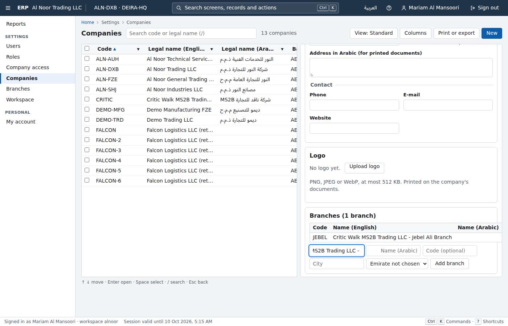

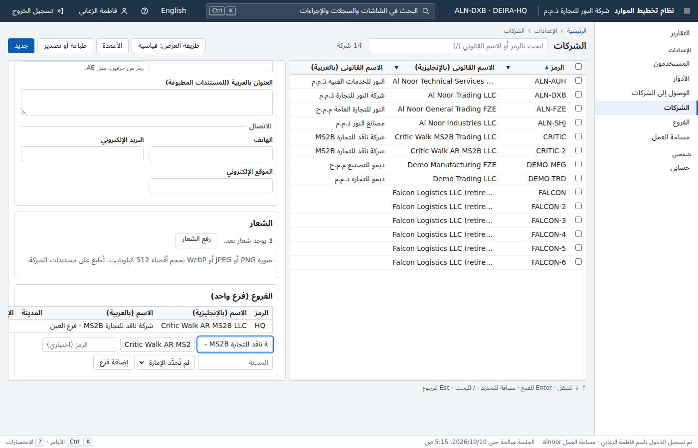

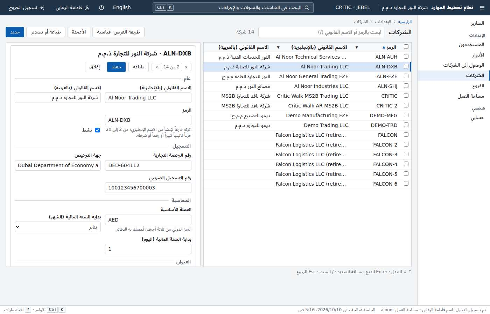

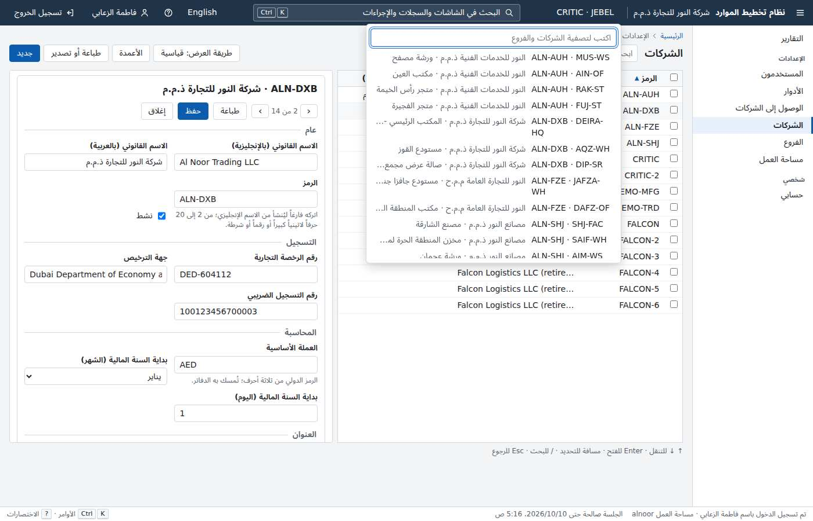

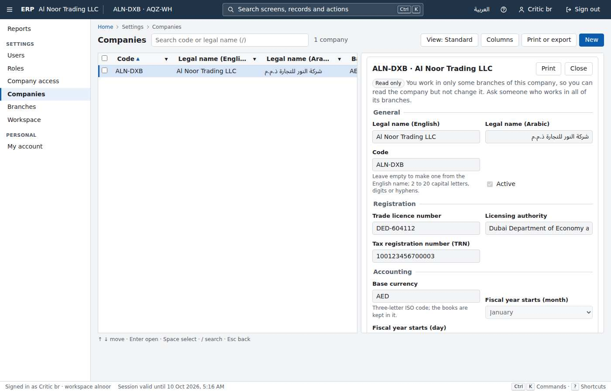

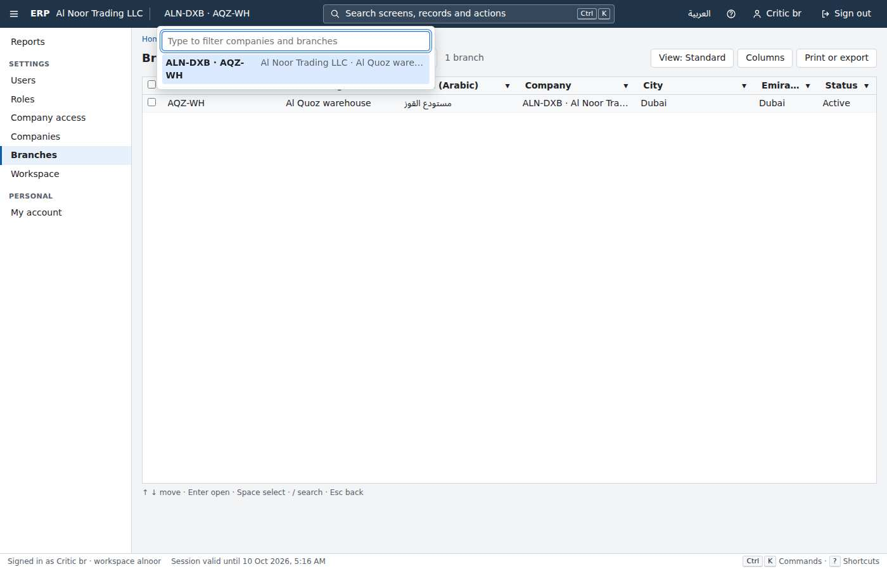

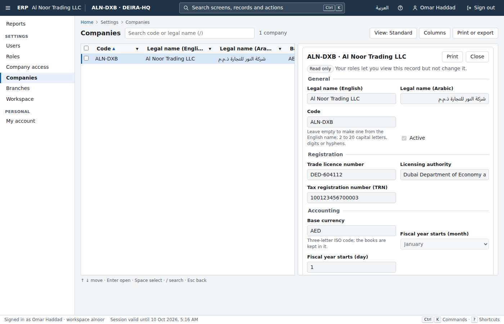

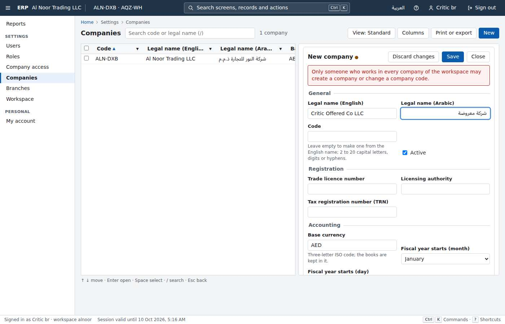
Round 7 · judged 2026-10-09T15:18:29Z · commit cd44d6b18c
Users, roles and permissions
Wave 1 · 6 rounds judgedRound 6's gap is fixed: callers whose grants come from a role in one company now attack the one-user and 'all that match' paths, and r6's plant Pc is caught. The same blind spot remains one level up, on the grant-bearing records themselves. Acting_on_a_record_that_grants_access_needs_everything_it_grants judges PUT, DELETE and copy on /api/identity/roles, and it still uses only callers whose roles are held everywhere. Plant Pf breaks one check in RoleEndpoints.Update: grants held in any one company count as held everywhere. With Pf, a user who manages roles only in the Dubai LLC can rename a role or strip permissions from one that staff of the JAFZA FZE and the Sharjah plant hold. All 513 .NET tests and every gate stay green. The product applies the rule correctly today; the live probe g2-escalation step 7 answers 403 roleBeyondOwn. Nothing would stop a regression, though, and per-company administration is exactly how UAE groups with free-zone entities run. Fix: - Run the grant-bearing-record check with CompanyCallers as well (endpoint permission plus target grants held only through a role in company X), aimed at roles held workspace-wide and at roles held in Y. - Keep a control the caller may change. - Add Pf as a LeakyModule self-test. This round is BLOCKED independently by a failing test in the newcomer's one command: the new G1 ids write oracle signs in as tenant B's admin with no workspace. When the text write oracle runs first in the same fixture, it has already created that address in tenant A with the shared gate password, and sign-in answers 409 auth.chooseWorkspace. Pass the workspace, or use a fixture of its own.
- G1 tenant isolation of the product as built PASS — No leak found. As alnoor's admin I attacked gulfsteel's first 3 users and 3 roles: 45 calls (GET by id, access, sign-ins, default-company, tenancy access, PUT, password, revoke, unblock, DELETE, copy). All 45 answered 404. B's users, roles and admin session were unchanged (attacks/g1-a-vs-b.txt). Differential checks put B's ids against random ids in companyRoles[].companyId, companyRoles[].roleId, roleIds[], the access companies[] and a role filter, and every pair answered the same. Two pairs differed, and neither is a leak. In the e-mail pair only the random set-up code differs. The role-name pair used a seeded name that A holds too: a name only B holds answers 201 for A, the same as an unused name (g1-rolename-followup.txt). Exports and reports: the users, roles and access lists as CSV, XLSX and Arabic PDF, plus usersByRole and roleSummary, hold no B data. The only 'gulfsteel' strings are 2 of A's own users that my e-mail differential created (attacks/exports.txt). Database: as erp_app with no tenant bound I saw 0 rows. A session-wide set_config also saw 0. Bound to A, I saw 100,007 users and 0 of other tenants'. UPDATE of B's rows changed 0, and an INSERT into B's roles was refused by RLS. DISABLE RLS, SET ROLE erp_owner and row_security=off were all refused, and no erp role has bypassrls (attacks/db-app-role.txt).
- G1 gate catches tenant leaks planted in this piece's surface PASS — All three plants were caught. - L5 (new): a process-wide RoleMemo cache behind GET /roles/{id}. Caught by G1ProcessStateTests ('static ...RoleEndpoints.RoleMemo: a read-only field that holds a mutable ConcurrentDictionary') and by G1HttpIsolation (67 leaks: 'GET /api/identity/roles/<B id> -> 200: response contains tenant B marker'). - L3 (r5's companyRoles[].companyId oracle, missed in r5 and r6): now caught by G1WriteOracleTests ('POST/PUT /api/identity/users [companyRoles[].companyId]: tenant A naming tenant B's record answered ... identityNotTheirCompany ... unknownIds'). - L6 (new, run 2): an extra PERMISSIVE SELECT USING(true) policy on identity.roles, added in p03's migration. Caught by three G1DatabaseIsolation tests. Files: plants/run1/gates.log, plants/run2/gates.log, plants/r7-plants-run1.diff, plants/r7-plant-L6-run2.diff.
- G2 permissions of the product as built (restricted roles, escalation, screens hide) PASS — Checked live (attacks/g2-bulk.txt, g2-escalation.txt). - 'All that match' refused all three stronger targets: a company manager, a weak role held in a company the caller does not work in, and a target holding grants in C2 when the caller held them only in C1. Each answered changed 0, refusedBeyondOwn 1. Both controls changed 1. - Escalation probes were all refused: self company role, self access, changing the Administrator's access, a grant in a company where the caller does not hold it, a workspace-wide grant, and role edits by a holder whose grants come from one company. - A newly invited read-only user, signed in with the set-up code: no New user button, Alt+N does nothing, the record panel says 'Read only' with no Save or Reset password, and the roles screen offers no New, Copy or Delete. From the browser, POST roles, POST users and matching/active answered 403 while GETs answered 200 (walks/walk2b-ro.txt, screenshot 04).
- G2 gate catches permission faults planted in this piece's surface FAIL — Plants Pc, Pe and Pf ran in one gate run through verify-slot (plants/run1). - Pc (r6's gap, re-applied): 'all that match' lets a grant held in one company cover the same role in any company. Now CAUGHT by G2AccountTakeoverTests SetTakeover ('aimed at a user holding ... in one company only, the other one than where the caller holds it, by a user holding [...] only through a role in one company'). - Pe (new): POST /roles/{id}/copy no longer checks that the caller holds the source role's grants. CAUGHT by Acting_on_a_record_that_grants_access, by Creating_from_a_role ('on the Administrator role by a user holding only [roles.create, roles.read] answered 201') and by the identity module test. - Pf (new): PUT /roles/{id} counts permissions the caller holds in ONE company as held everywhere, so a company-scoped role manager can edit a workspace-wide role. MISSED by every gate test and every identity module test: no failure in gates.log or identity.log names PUT /api/identity/roles. My proof plants/CriticR7Proof.cs passes on the shipped product (plants/proof-unplanted/proof.log). It fails planted: 'a user holding the role's grants only in company 1 changed a role held across the workspace: 200 {..."nameEn":"Pf renamed ...","userCount":1}' (plants/proof-planted/proof.log). The new CompanyCallers inventory is wired into the user takeover and set-based checks only. The grant-bearing-record check, which judges PUT/DELETE/copy on roles, still uses only callers with workspace-wide roles.
- G3 clean clone: one command builds, migrates, seeds, tests FAIL — Fresh clone of 870b36f, run as ERP_PROJECT=c-p03-identity-r7 with ports 20350, 20351, 20360 and 20361 (all honoured), through verify-slot. The slot was taken at 02:24:07Z at load 1 to 40. Result: 'verify stages failed: dotnet ... verify FAILED (exit 1)' after 1,889 s. The suite failed 1 of 152 gate tests: G1WriteOracleTests.Writes_answer_the_same_for_another_tenants_record_ids_as_for_ids_that_exist_nowhere. Error: 'Sign-in as admin@bravo-cnry340d2b08ef.example failed: 409 auth.chooseWorkspace ... workspaces: alpha ("Name oracle491c3eee3897x"), bravocnry...' (verify-kept/dotnet-suite.log). The test arrived in this round's p03 merge (f336aed), and it depends on test order. The text write oracle, run first in the same fixture, creates in tenant A a user with tenant B's seeded admin address and the shared gate password. The ids oracle then signs in as B's admin with no workspace and gets 'choose a workspace'. In my planted run the same test got past sign-in, so whether it passes depends on order. Web 358, compare 315 and e2e 79 all passed. The timing stage did not run.
- G3 clean clone: one command to a running seeded demo PASS — ./erp up with ERP_SEED_USERS_CSV printed 'The demo is running (33 s): http://localhost:20350', with 100,005 users in alnoor and 1,005 in gulfsteel (up.log). A first attempt failed in 2 s on a transient MCR network EOF (up-attempt1-mcr-eof.log). The retry succeeded, so this is not a product fault.
- Rule gates (licences, money, strings, audit) and ratchet counts PASS — The licence, money, string, audit and OpenAPI gates all passed inside the verify. The string check found 660 keys in English and Arabic. No count fell against r6: dotnet 513 (was 484), web unit 358 (was 350), e2e 79 (was 75), compare 315 (was 194). The live audit trail records every identity write with its actor, including the set-based deactivations and role deletes (attacks/audit-sample.txt). The 9,000 to 10,500 s rise of verify.cpuSeconds is the owner's own edit (needs-human #12), not a weakening by the piece.
1264 / 1265 passed
1 failed · 0 skipped · 1889s
Clean clone → demo: FAIL in 1889s
| Task | Ours | Odoo | Winner |
|---|---|---|---|
| create-restricted-user (named) | 5 · 37 · 0.607s · 20.91s | 10 · 46 · 4.171s · 30.05s | ours |
| find-user (find one user among 100,000) | 3 · 8 · 1.069s · 6.64s | 6 · 9 · 1.088s · 11.19s | ours |


Round 7 · judged 2026-10-09T03:15:00Z · commit 870b36fbde
English/Arabic app shell
Wave 1 · 5 rounds judgedThe palette finds screens and records: users, roles, companies and branches (round 4's record gap is fixed). The only actions it lists are the shell's own: switch language, Arabic digits, preferences, shortcuts, navigation pane, print this screen and sign out. Typing 'new', 'new user', 'invite', 'new role', 'new company', 'new branch', 'export', 'copy role', 'unblock' or 'sign-in history' returns nothing. It returns nothing on the Users screen either, where 'new', 'export' and 'columns' also find nothing, though the screen itself has New user (Alt+N), Print or export (Alt+Shift+R), Columns and Views. The cause is the extension contract (web/src/kernel/extensions.ts): modules can give the palette record sources only, with no way to contribute actions. Every later module (invoices, purchase orders, journal entries) will inherit a palette that can find a record but cannot start one or run its commands. For a keyboard-first UAE trading office that is the main promise of the palette. Fix: add a permission-filtered 'actions' contribution to ModuleExtensions (title EN/AR, chord, run or path, optional screen context), register the existing toolbar actions of identity and tenancy (new user, new role, copy role, new company, new branch, print or export the list), and show the current screen's actions first. Add vitest and e2e checks, and a G2 screen plant (an action offered without its permission).
- G3 clean clone: one command builds, migrates, seeds and passes all tests PASS — verify-critic-p04-shell-r7.log: ERP_PROJECT=c-p04-shell-r7 ERP_VERIFY_HTTP_PORT=20460 ERP_VERIFY_DB_PORT=20461 verify-slot.sh ./erp verify. Slot taken 2026-10-09T15:44:12Z. dotnet stage passed in 2251 s, web in 1216 s, e2e in 2605 s, timing budgets 6/6, 'Ratchet check passed', 'verify passed in 2658 s'. Processor time 8317 s (max 10500). Wall-time maximum not judged: the machine was busy (load 8.16 at the start). My first attempt (verify-critic-p04-shell-r7-attempt1-contaminated.log) failed only because I had added two critic compare tasks to the clone before it copied the sources ('no Odoo baseline'). That was my error, not the product's. I removed the files and the full re-run passed.
- G3 one command to a running seeded demo PASS — up.log: ERP_PROJECT=c-p04-shell-r7 ERP_HTTP_PORT=20450 ERP_DB_PORT=20451 ./erp up served the seeded demo (100,006 users in Al Noor) in 130 s (a second up took 75 s, up2.log). The project and port overrides from the environment work.
- G1 tenant isolation of the product (my own attacks) PASS — attack-http.txt: as admin@alnoor, PUT /api/identity/me/preferences with gulfsteel's userId/tenantId in the body, the query, nested objects and X-Tenant-Id/X-Tenant headers changed only A (B's session still shows en/latn). B's user, company and logo all gave 404. companyProfile for B's company in json/csv/pdf ar gave 404. branchDirectory for B's company gave 0 rows. The users search and the Arabic CSV export for 'gulfsteel' came back empty. attack-db-app-role.txt: as erp_app with no tenant there were 0 rows. With A bound there were 0 of B's users, companies or tenants, UPDATE of B's rows gave 0, and INSERT as B was refused by RLS. A session-level tenant without the transaction marker gave 0 rows. Disabling RLS was refused, and so was reading sign_in_secret. All 16 tenant tables have RLS enabled and forced. client-state.txt: after B signs out in the same tab, A sees nothing of B in storage, the palette or Back history.
- G1 gate catches a tenant leak planted in this piece's surface PASS — Plant L1 (plant-L1-P2.diff): PUT /me/preferences with language=ar keeps the last Arabic caller's e-mail in a process environment variable and appends it to the next Arabic caller's displayNameAr, whatever the tenant. Caught twice (plants-L1-P2-gates.log). G1TenantSourceTests failed: 'ProfileEndpoints.cs:59 keeps state in a process-wide store outside fields (... environment variables ...)'. G1NonInterferenceTests also failed on the Arabic path: '6 answers depend on the other tenant's activity: tenant A: PUT /api/identity/me/preferences (language="ar") ... (language="ar" numerals="arab")'. Round 4's biggest gap (Arabic enum values never attacked) is now closed.
- G2 permissions on this piece's surface PASS — Plant P1 (plant-L1-P1.diff: .AllowAnonymous() stacked on RequirePermission(ProfileUpdate)): the host refuses to start with 'declares identity.profile.update but allows anonymous callers, so it is never checked', and all gate tests fail (plant-P1-gates.log). Plant P2 (the action guarded by identity.users.read instead of its own identity.profile.update): G2PermissionTests.No_endpoint_that_changes_data_is_guarded_by_a_read_permission failed, as did Every_endpoint_under_a_reviewed_prefix_declares_exactly_its_reviewed_permission and a self-test. Client plant C-P (plant-CP-web.diff: the language/digits switch saves to the server without identity.profile.update): AppShell.test.tsx 'preferences without the permission ... never asks the server to save them' failed (plant-CP-vitest.txt). Live: noaccess@alnoor PUT /me/preferences gives 403.
- Rule gates (licences, EN/AR strings, accessibility, no float money, audit) PASS — Passed inside verify. String check: 69 source files, 662 keys in English and Arabic. Accessibility check: 996 JSX elements. Rule and gate tests are in the 535 .NET tests. My own check of every module's en.json/ar.json found key parity in all six, with no untranslated values except the two native language names.
1299 / 1299 passed
0 failed · 0 skipped · 2658s
Clean clone → demo: PASS in 2658s
| Task | Ours | Odoo | Winner |
|---|---|---|---|
| switch-to-arabic | 1 · 0 · 0.189s · 2.65s | 6 · 1 · 4.174s · 15.28s | ours |
| reach-screen-keyboard | 2 · 3 · 0.266s · 3.94s | 3 · 8 · 1.473s · 3.99s | ours |
| open-third-user-keyboard (critic-added r2, kept) | 6 · 7 · 0.344s · 6.41s | 8 · 13 · 2.279s · 6.74s | ours |
| new-user-keyboard (critic-added r7) | 3 · 5 · 0.321s · 5.85s | 4 · 10 · 1.571s · 5.9s | ours |
| keyboard-navigation (open the third contact by keyboard) | – | – | not-compared |

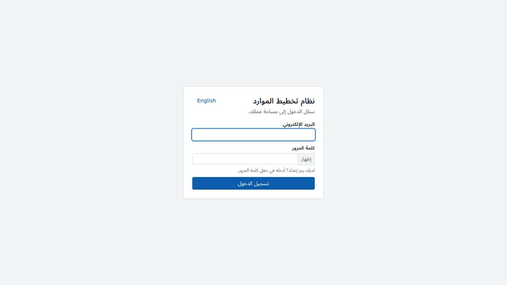

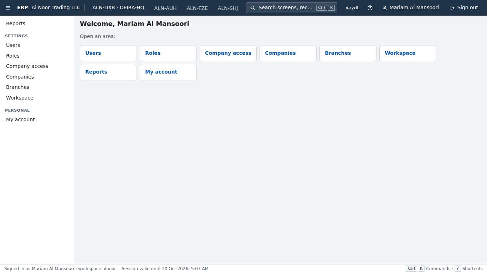

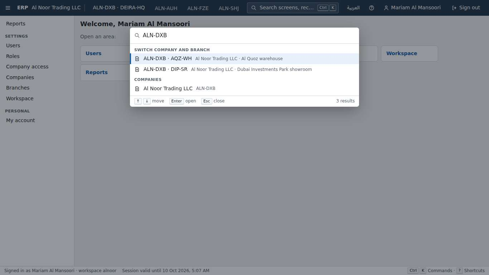

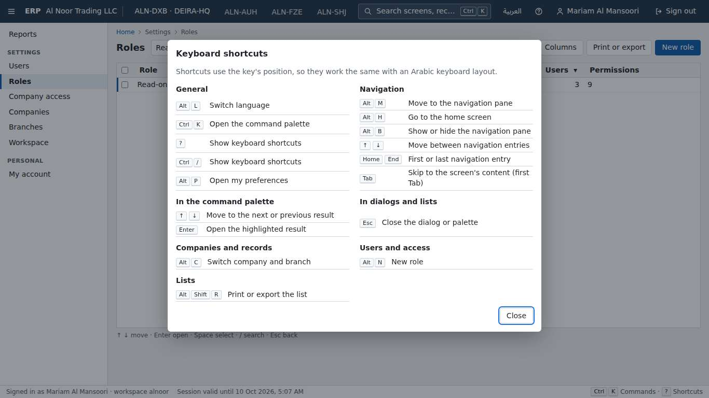

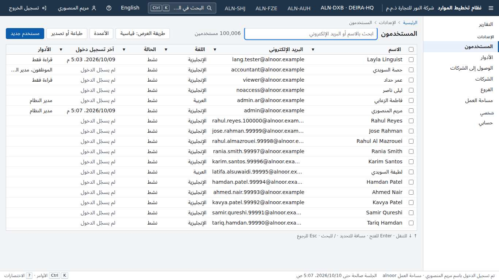

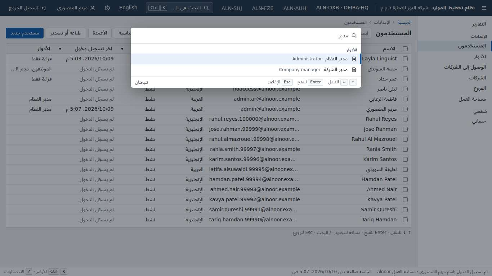

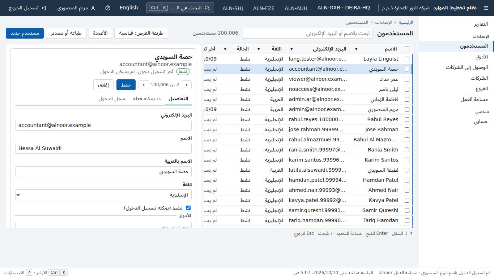

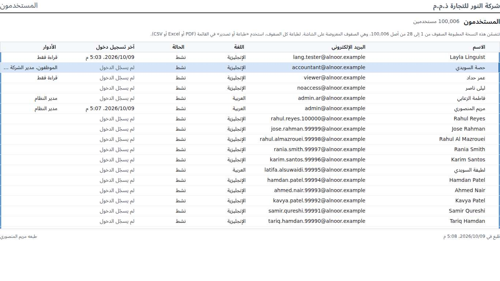
Round 7 · judged 2026-10-09T16:28:58Z · commit 1e648cadc7
List and search framework
Wave 1 · 5 rounds judgedp05 promises that every list registered with the framework is attacked automatically by G1. Every later module (Contacts, invoices, stock) relies on that promise for its 100,000-row lists. But every gate environment is SeedPlan.Gate with 25 users per tenant. ListAnswers, NonInterference and HttpIsolation judge totals carefully: sorted, keyset, offset, grouped, both directions. They do it only at a volume where no 'large list' code path ever runs. The most natural optimisation for a 100,000-row list is to stop counting exactly and show an estimate. The estimate PostgreSQL offers (pg_class.reltuples, pg_stat_user_tables.n_live_tup, EXPLAIN row estimates) covers every tenant, because row-level security does not apply to catalog statistics, and erp_app can read them. Plant L12 does exactly this past 10,000 rows. Nothing structural flags it either: ProcessState only sees in-process state, and TenantSource and ReviewedLookup do not look at catalog reads. Fixes: (a) judge list answers also against a tenant pair where both tenants hold a demo volume of rows (the timing stage's 100,000-row fixture exists already). Sending each list's unfiltered, sorted, offset and grouped query as the smaller tenant, the total must equal its own row count. (b) Add a source or SQL-trace rule: product code and the SQL it runs in a request may not read pg_class, pg_stat*, pg_statistic or EXPLAIN output, unless that is reviewed. (c) Keep the volume threshold out of reach of a gate that only seeds tens of rows: give the gate a 'large list' profile.
- G1 tenant isolation (product as built) PASS — The gate suite is green inside verify. I attacked as admin@gulfsteel against alnoor (100,005 dataset users) with 27 targeted probes and found 0 leaks (attack-api.txt). The probes covered needle e-mail, name and Arabic searches, eq and OR filters, quote injection, % and _ wildcards, X-Tenant headers, tenantId query parameters, groupBy, skip=99000, a replayed alnoor cursor, alnoor's user id, GET/PUT/DELETE of alnoor's shared view through both route kinds (all 404, and the view stayed), the views list, the definition, CSV/XLSX/PDF list prints, and the bulk 'matching' count oracle (409 with gulfsteel's own count). I then ran 257 probes over all 5 registered lists (users, roles, companies, branches, access): unsorted and sorted, each with alnoor's ids, e-mails and names as searches. That found 0 leaks (attack-api-lists.txt). In the database (db-inspect.txt), lists.saved_views has RLS enabled and forced with tenant_isolation. erp_owner, erp_app and erp_auth have no superuser and no BYPASSRLS. Unbound, erp_app sees 0 users and 0 views. Bound to gulfsteel, it sees 1,005 users, 0 alnoor users and 0 alnoor views, and an UPDATE of alnoor's views touches 0 rows.
- G1 catches tenant leaks planted in p05's surface FAIL — Plant L12 (L12-estimated-total-from-table-statistics.patch, about 25 lines in ListBinding.QueryAsync) is a common optimisation for big lists. When a list has no search and no filter and the table holds more than 10,000 rows, the total shown is pg_class.reltuples, the planner's estimate of the whole table across every tenant, instead of count(*). All 56 G1 tests PASSED with it, run in the product's own toolbox image: ProcessState, TenantSource, ReviewedLookup, NonInterference (17 min), HttpIsolation/ListAnswers (34 min) and WriteOracle (run-L12-g1-all.log, 04:44 to 05:18Z). Live on a plant stack (plant-live-L12.txt), gulfsteel's GET /api/identity/users (unfiltered, and sorted) answers total 101,010, which is every tenant's users. Gulfsteel has 1,005, and the same rows through a filter that matches everything say 1,005. Alnoor sees 101,010 too, against its real 100,005. On screen, gulfsteel's Users list header reads '101,010 users' (plant-L12-gulfsteel-users-shows-all-tenants-total.jpg). The blind spot: every gate environment seeds 25 users per tenant (SeedPlan.Gate), so the list-answer gates never reach a volume where a volume-dependent code path runs. No structural rule forbids product code from reading cross-tenant catalog statistics (pg_class, pg_stat_*, EXPLAIN row estimates). Kept fixed from round 7: plant L11 (file-local static memo) is now caught by ProcessState (run-r7-plants-L11-P6-regression.log).
- G2 permissions (product as built) PASS — The gate suite is green. In the browser, viewer@alnoor's save dialog has no share box (ui-scope.txt), and the viewer opens Users on the administrator's shared default view (09-viewer-opens-shared-default.jpg). Live on the P8 plant stack, before the plant path ran, the viewer's direct POST /shared-views answered 403 and the definition said canShare false (plant-live-P8.txt).
- G2 catches unpermissioned actions planted in p05's surface FAIL — Plant P8 (P8-personal-route-creates-shared-view.patch, 6 lines in ViewEndpoints.cs) adds an isShared body field to SaveViewRequest. It is documented in the hand-written view schema, as a 'Share with the team' box in the save dialog would need. Create() honours the field on POST /views, which declares only the list's read permission, so lists.views.share is never checked. All 36 G2 tests PASSED (run-P8-g2-all.log), including Every_list_endpoint_needs_the_lists_own_permission_and_shared_view_writes_need_sharing. All 39 Rules tests PASSED (run-P8-rules.log). Live (plant-live-P8.txt): viewer@alnoor has canShare false and gets 403 on POST /shared-views. Yet POST /views {isShared:true,isDefault:true} answers 201 isShared true isDefault true. The viewer's view replaces the workspace's 'Team view' as the shared default that every user opens. The blind spot: the G2 list test builds view bodies from a fixed field list (PersonalBody/ViewRequest) and never from the request schema. FieldVariants, which does derive fields from the schema, runs only for grant-bearing records and account takeover. Kept fixed from round 7: plant P6 (a personal default clears the shared default) now fails the G2 list test (run-r7-plants-L11-P6-regression.log).
- G3 clean clone PASS — I cloned 35ba5bc fresh and ran ERP_PROJECT=c-p05-list-search-r9 ERP_HTTP_PORT=20550 ERP_DB_PORT=20551 ERP_VERIFY_HTTP_PORT=20560 ERP_VERIFY_DB_PORT=20561 through verify-slot.sh ./erp verify. It passed in 4067 s from 'slot taken' (04:34:14Z, no wait). Processor time was 9556 s against a maximum of 10500. The ratchet passed: .NET 550, web 392, e2e 89 and compare 353, each at its minimum (verify-critic-p05-list-search-r9.log). The wall time is over the 3600 s quiet-machine figure, but it was not judged because the machine was busy (my plant run of G1 ran beside it, and other agents' load was up to about 75). A plain ./erp up gave the seeded 100,005-user demo in 108 s (up-critic-p05-list-search-r9.log). With ERP_SEED_USERS_CSV it took 100 s (up-dataset-…log). The port and project overrides worked.
- Rule gates (licence, money, strings, audit, list index) PASS — Green inside verify. The string check passed (711 keys in English and Arabic). The users list has trigram GIN indexes on display_name, email_normalized and display_name_ar, and (tenant_id, column, id) indexes for sorting (db-inspect.txt). Saved-view writes leave audit rows with the actor and old and new values (11 insert and 1 delete after my browser session).
1384 / 1384 passed
0 failed · 0 skipped · 4067s
Clean clone → demo: PASS in 4067s
| Task | Ours | Odoo | Winner |
|---|---|---|---|
| find-user (find one user among 100,000; p16 Contacts is not built, so the dataset's 100,000 users) | 3 · 3 · 0.579s · 8.29s | 6 · 5 · 1.149s · 10.35s | ours |
| find-record (find one contact among 100,000) | – | – | not-compared |


Round 9 · judged 2026-10-10T05:52:04Z · commit 35ba5bc166
Form and report framework
Wave 2 · 4 rounds judgedFor a UAE trading company, prints and exports are how data leaves the system: Excel to the accountant, PDFs to auditors and vendors. This piece owns that surface. The gates now cover every format, language, digit system, disposition and grouping. But the victim in G1's answer-shapes phase prints with at most one free-text parameter (search), and G2ReportData prints each list with only its default and all-columns queries. Code that behaves differently on the other query inputs these routes document (columns, filter, sort, timeZone, search for G2) is never exercised from tenant B, or under a narrower permission set. Two such faults in this piece's own endpoints passed every gate. L6 is a tenant leak: a print spool keyed on download name, columns and format, with no tenant. P9 is a permission fault: a searched list print names role records to a caller who may not read roles. The fix: tenant B, and every permission set in G2ReportData, should print every report and list with a non-default value of every documented query parameter (search, filter, sort, columns subset, timeZone, groupBy) as well as the enumerated shapes. That should run before and during A's attack, with the answers judged as now, and the gate should be plant-tested with L6 and P9. Separately, edit-and-save now ties Odoo at 19 keystrokes, so the piece would be a LOSS even with the gates fixed.
- G1 tenant isolation (product as built) PASS — Gate suites passed inside verify. My own attack on the live demo (tools/attack.mjs, attack-print-surface.txt) covered 85 shapes: every report and list, plain, with all columns, with one column, search, timeZone, numerals=arab, disposition=inline and groupBy, plus reports run with alnoor's and gulfsteel's own company and role ids. alnoor printed first in json/csv/xlsx/pdf × en/ar. gulfsteel then asked for each shape plain, with X-Tenant-Id/X-Tenant, and with X-Company-Id/X-Branch-Id: 2,040 answers (1,896×200, 144×404). None held an alnoor marker in JSON, CSV or unzipped XLSX, and no PDF was byte-identical to alnoor's. Database: erp_owner, erp_app and erp_auth have no superuser and no BYPASSRLS. All 16 tables with tenant_id have RLS enabled and forced. erp_app with no tenant bound sees 0 users.
- G1 catches faults planted in p06's surface FAIL — Plant L6 (plants/plant-L6-print-spool-only.patch, in ReportEndpoints.Output) keeps a printed PDF/CSV/XLSX in a temp-folder print spool for 10 minutes. The spool key is the download name, the chosen columns and the format, with no tenant, and it is used only when the request names `columns`. With L6 applied, the whole gate project (filter Load!=Timing without self-tests) passed every G1 test: G1HttpIsolation (15 min 34 s, answer shapes phase included), G1NonInterference, G1ProcessState, G1TenantSource, G1CompanyIsolation and G1BranchScope (plants/run-A-L6-P6.log; its single failure is P6's G2 test). All 36 G2 tests also passed under L6 alone (plants/run-C-L6.log). The leak is real (plants/plant-L6-live-demo.txt): alnoor's admin GETs /api/reports/lists/identity.users?columns=displayName,email&format=csv&language=en, then gulfsteel's admin sends the same request and receives 2,006 @alnoor.example users and 0 of its own. The roles list Arabic PDF and XLSX with columns=nameEn come back byte-identical. Cause: in the answer-shapes phase the victim sends only enumerated parameters plus a single free-text one (search). Tenant B therefore never prints with `columns` (or timeZone, filter, sort), and a store fed only by those shapes is never filled from B.
- G2 permissions (product as built) PASS — All G2 tests pass inside verify. Live checks: the viewer opens the company form with 20 of 20 controls disabled and no Save button. Ctrl+S, Ctrl+Enter, Alt+Z, Delete and Alt+N sent no write. The catalogue is filtered by permission. A user holding identity.users.read without identity.roles.read gets role counts, not names, in an unsearched users list print, and GET /api/identity/roles answers 403.
- G2 catches faults planted in p06's surface FAIL — Round 3's misses are now caught. P6 (CSV/XLSX ignore withheld columns) is caught by G2ReportData through header and value checks (plants/run-A-L6-P6.log). P8 (list print names records with no permission check) is caught by G2ReportData ('prints Administrator in column roleIds…', plants/run-D-P8.log). New plant P9 (plants/plant-B1-P9-searched-list-names.patch) was MISSED: NamesAsync skips the identity.roles.read check whenever the list print carries `search`, and all 36 G2 tests passed (plants/run-B-P9.log). It is real live (plants/plant-L6-P9-live-demo.txt). A user holding only identity.users.read and reports.catalog.read gets 403 from /api/identity/roles. Yet /api/reports/lists/identity.users?format=csv&search=admin prints Roles = 'Administrator' for both admins, while the same list without search prints counts (1, 0). Cause: G2ReportData prints each list with only two queries (default columns and all columns), never with search, filter, sort or groupBy.
- G3 clean clone PASS — Fresh clone at 41b2af3. `ERP_PROJECT=c-p06-form-report-r4 ERP_HTTP_PORT=20650 ERP_DB_PORT=20651 ERP_VERIFY_HTTP_PORT=20660 ERP_VERIFY_DB_PORT=20661 ERP_VERIFY_LOG=… verify-slot.sh ./erp verify` ran from slot taken at 00:53:35Z to 01:28:30Z (2,095 s; the script reports 2,092 s). It passed 516 .NET, 358 web unit, 79 e2e and 315 compare tests, and the ratchet passed. Processor time was 6,372 s of 10,500 s. `ERP_SEED_USERS_CSV=gauntlet/compare/data/out/users.csv ./erp up` brought up the seeded demo in 60 s (up.log). Port and project overrides worked.
- Rule gates (licence, money, strings, audit, reports) PASS — These pass inside verify. Form saves leave audit.entries rows (202,112 inserts and 10 updates in the demo database). Fonts are OFL-1.1, which the owner approved earlier.
1268 / 1268 passed
0 failed · 0 skipped · 2095s
Clean clone → demo: PASS in 2095s
| Task | Ours | Odoo | Winner |
|---|---|---|---|
| edit-and-save | 3 · 19 · 0.134s · 9.72s | 4 · 19 · 0.209s · 10.28s | odoo |
| arabic-report | 2 · 0 · 0.075s · 5.3s | 6 · 0 · 3.817s · 15.9s | ours |
| print-list-arabic | 3 · 13 · 0.624s · 11.09s | 5 · 32 · 5.669s · 19.06s | ours |


Round 4 · judged 2026-10-09T01:55:59Z · commit 41b2af3485
Audit trail
Wave 2 · 0 rounds judgedWaiting for its first critic.
Multi-currency
Wave 2 · 0 rounds judgedWaiting for its first critic.
Tenant-defined custom fields
Wave 2 · 0 rounds judgedWaiting for its first critic.
Document numbering
Wave 2 · 0 rounds judgedWaiting for its first critic.
Attachments
Wave 2 · 0 rounds judgedWaiting for its first critic.
Background jobs
Wave 2 · 0 rounds judgedWaiting for its first critic.
Approval flows
Wave 3 · 0 rounds judgedWaiting for its first critic.
Import and export
Wave 3 · 0 rounds judgedWaiting for its first critic.
Documented API for everything
Wave 3 · 0 rounds judgedWaiting for its first critic.
Shared Contacts directory
Wave 2 · 0 rounds judgedWaiting for its first critic.